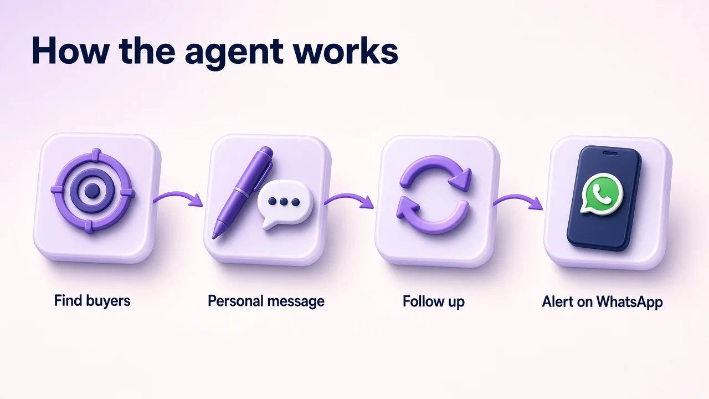

A LinkedIn outreach agent for B2B SaaS finds the exact job titles that buy your software, sends each person a personal note, follows up at a human pace and passes warm replies to your founder or sales head on WhatsApp. It does the daily prospecting work of an SDR, so your team spends its time on demo calls instead of copy-pasting messages.
SaaS buyers live on LinkedIn. Heads of sales, CTOs, operations leaders and founders are all there, and you can filter them by title, industry and company size. The problem is not access. It is the daily grind of doing outreach well.
None of this needs a bigger team. It needs the same careful work done every single day, which is exactly what an agent is good at.
Think of it as a prospecting teammate that works in a browser, like a human SDR, and reports to you on WhatsApp. Here is the daily loop:

For a deeper look at the lead-gen side, see our guide to an AI agent for LinkedIn lead generation.
Most SaaS teams compare three options. Here is how they differ on the work that matters.
| What you need | AI LinkedIn Outreach Agent | New SDR hire | Self-serve automation tool |
|---|---|---|---|
| Works every day | Yes | Working days, minus leave | Only if someone sets it up |
| Personal message per lead | Yes, written for each person | Yes, when they have time | Usually templates |
| Time to start | First demo within 7 days | Hiring plus ramp time | Fast, but you run it |
| Who sorts replies | The agent, with WhatsApp alerts | The SDR | You |
| Account safety | Modest volume, stops on reply | Depends on the person | Risky at high volume |
LinkedIn's own page on prohibited software and extensions warns that spam-style automation can get accounts restricted, so volume alone is never the answer. We compare these options in more detail in LinkedIn automation vs LinkedIn agency.
The agent is only as good as the list. Before the first message goes out, we agree on a tight ICP with you:
A tight list means fewer messages, better replies and a calendar full of buyers rather than browsers. If you want the message side covered too, read how B2B sales teams get more LinkedIn replies.
We only share dated, real numbers. As of 21 Oct 2026, the agent had reached 345 people for Haique Surfaces, with 107 accepting and 14 replying. For Sanjeet Ray, a business coach, October 2026 brought 149 invites, 43 connections, 12 conversations and 3 warm leads. Your numbers will depend on your offer, your market and how tight the ICP is.
Judge the agent over a full month on four things: people reached, acceptances, replies from real buyers and booked demos. We aim to show you a first demo within 7 days so you can see the agent working before you commit further.
Prospecting is non-physical work. A human SDR sits in a browser, sends messages and reports to the manager on WhatsApp or Slack. An agent does the same loop, every day, without ramp time or turnover. That frees your people for the parts that need judgment: discovery, demos and closing.
Clara AI is a 14-person AI team that builds and runs agents for 19 businesses. We set up the LinkedIn agent for you and run it, so you do not need a tech team. If search traffic matters too, our AI SEO Agent writes and publishes content daily, and we also build custom AI agents for other sales and ops work.